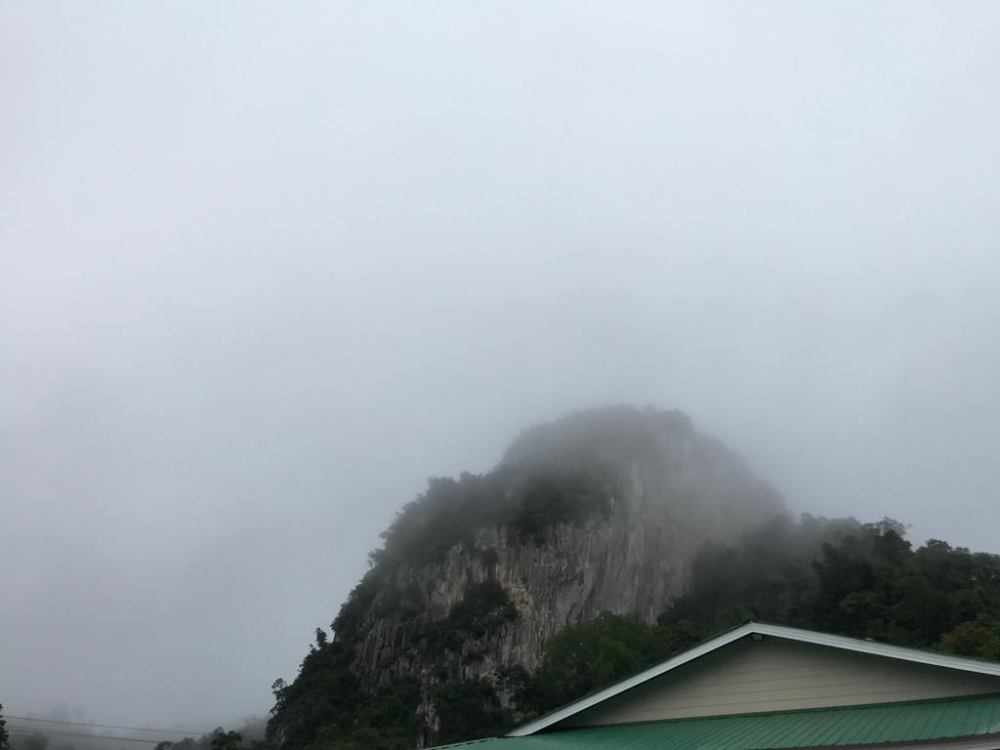
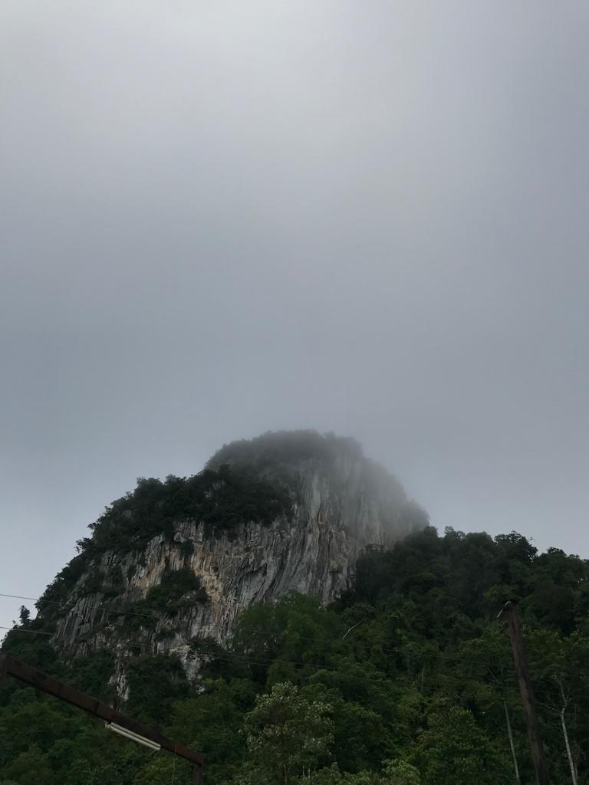
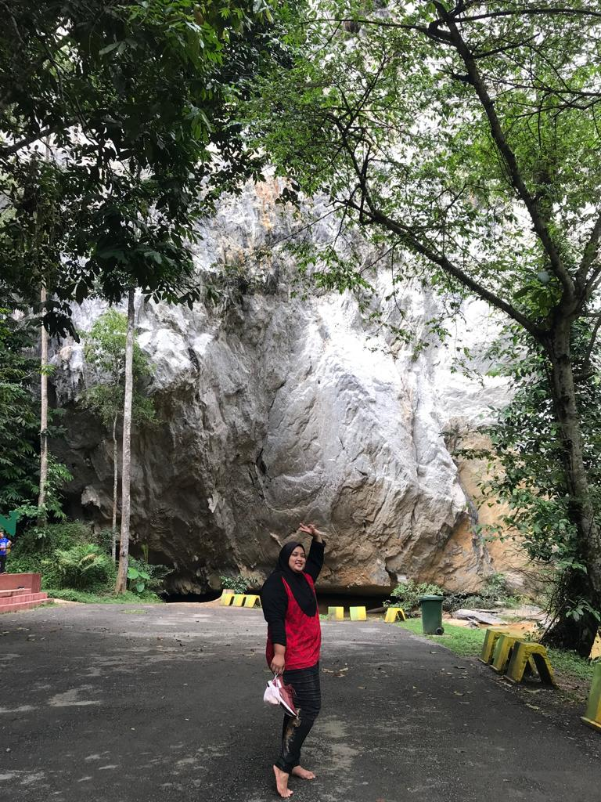
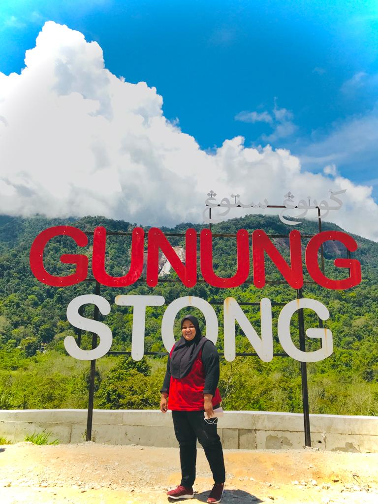
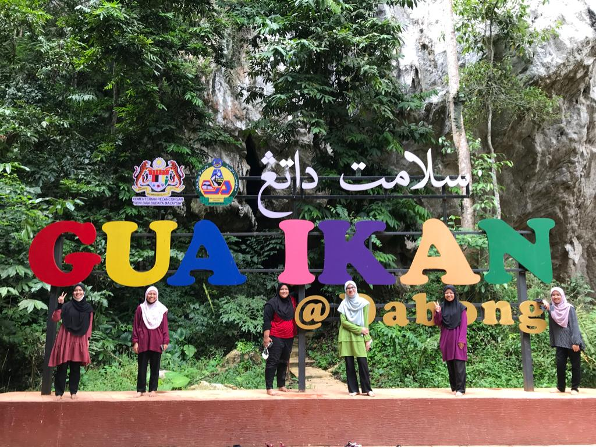
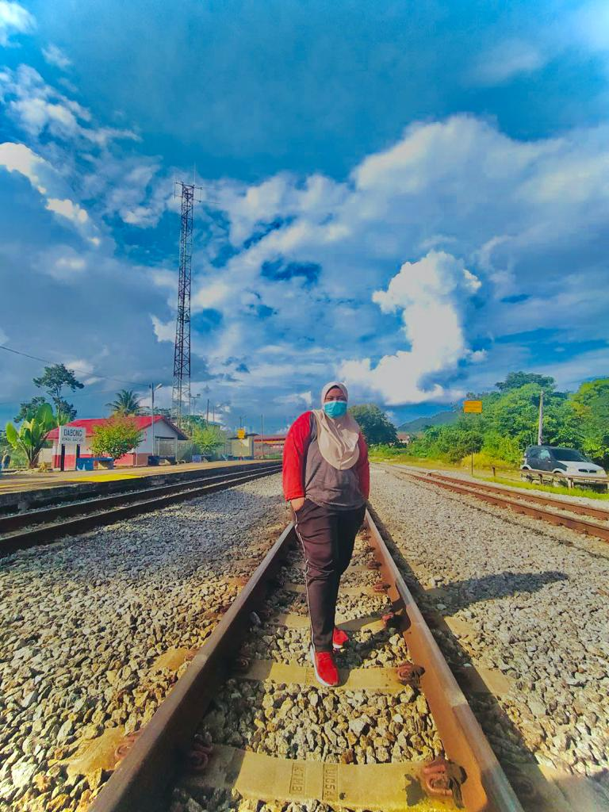
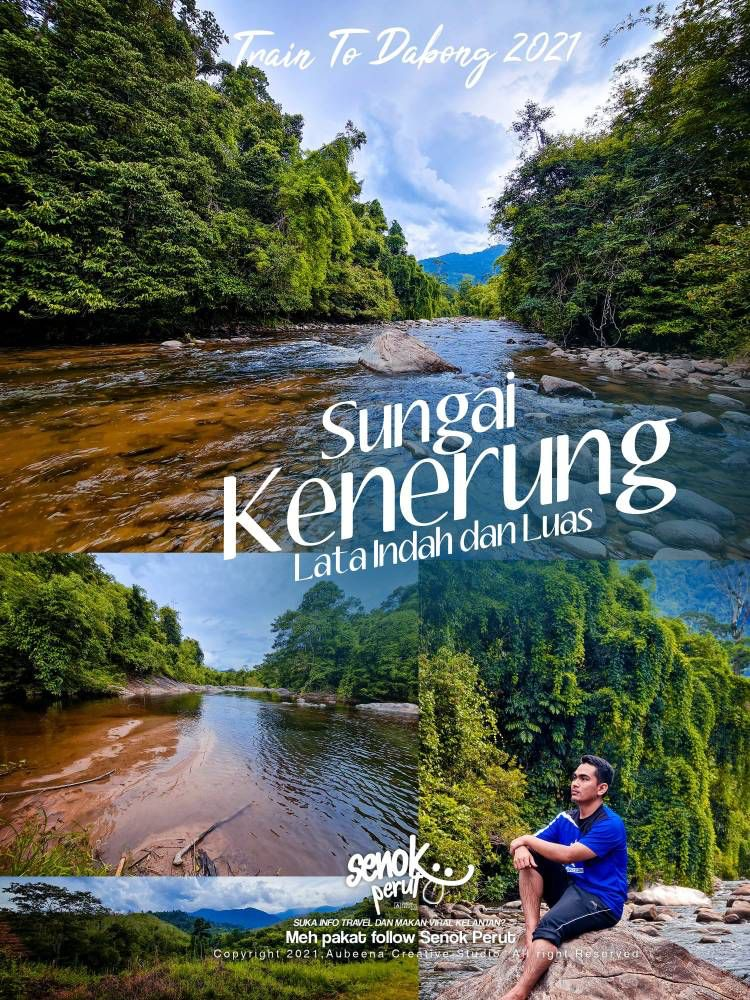
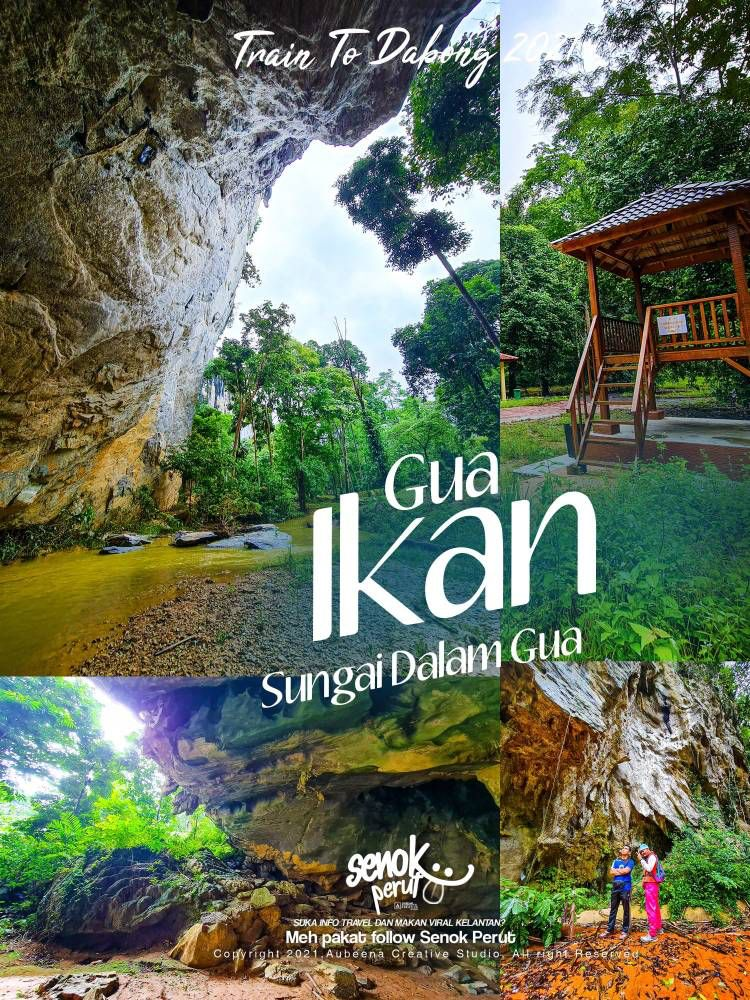

Gallery
This is gallery of our trip to Gunung Stong

The 1st picture above show the Gunung Stong view from above.

The 2nd picture above show the Gunung Stong view from above.

The 3rd picture above show Aisyah arrived at Gua Ikan.

The 4th picture above show Aisyah at the Gunung Song signboard.

The 5th picture above show us in front of Gua Ikan signboard.

The 6th picture above show Aisyah at Dabong Railway.

The 7th picture above show the beauty of Sungai Kenerung.

The 8th or last picture above show the beauty of Gua Ikan.